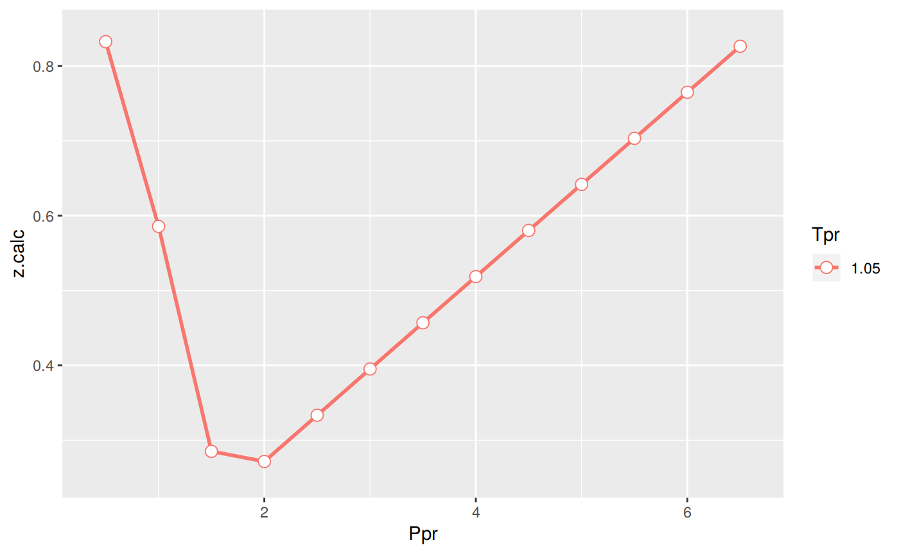
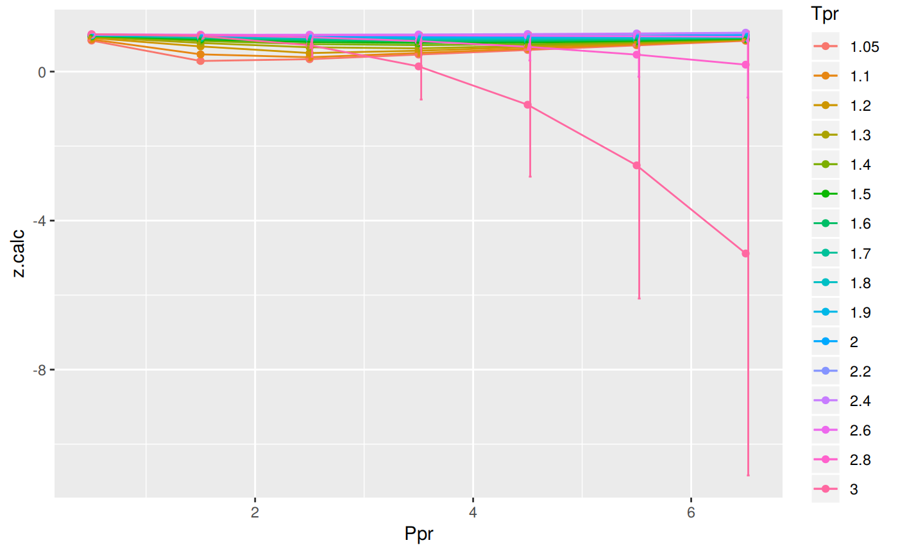

Beggs-Brill correlation
Vignette Author
2017-10-08
Get z at selected Ppr and Tpr
# get a z value using DPR correlation
library(zFactor)
z.BeggsBrill(pres.pr = 1.5, temp.pr = 2.0)
# HY = 0.9580002[1] 0.962902From the Standing-Katz chart we obtain a digitized point at the same Ppr and Tpr:
# get a z value from the SK chart at the same Ppr and Tpr
library(zFactor)
tpr_vec <- c(2.0)
getStandingKatzMatrix(tpr_vector = tpr_vec,
pprRange = "lp")[1, "1.5"] 1.5
0.956 It looks pretty good.
Get z at selected Ppr and Tpr
library(zFactor)
z.BeggsBrill(pres.pr = 1.5, temp.pr = 1.1)[1] 0.4631501From the Standing-Katz chart we obtain a digitized point:
library(zFactor)
tpr_vec <- c(1.1)
getStandingKatzMatrix(tpr_vector = tpr_vec,
pprRange = "lp")[1, "1.5"] 1.5
0.426 At lower
Tprthere is some error. We see a difference between the values of z from the `BB calculation and the value read from the Standing-Katz chart.
Get values of z for several Ppr and Tpr
# test HY with 1st-derivative using the values from paper
ppr <- c(0.5, 1.5, 2.5, 3.5, 4.5, 5.5, 6.5)
tpr <- c(1.3, 1.5, 1.7, 2)
corr <- z.BeggsBrill(pres.pr = ppr, temp.pr = tpr)
print(corr)
# From Hall-Yarborough
# 0.5 1.5 2.5 3.5 4.5 5.5 6.5
# 1.3 0.9176300 0.7534433 0.6399020 0.6323003 0.6881127 0.7651710 0.8493794
# 1.5 0.9496855 0.8581232 0.7924067 0.7687902 0.7868071 0.8316848 0.8906351
# 1.7 0.9682547 0.9134862 0.8756412 0.8605668 0.8694525 0.8978885 0.9396353
# 2 0.9838234 0.9580002 0.9426939 0.9396286 0.9490995 0.9697839 0.9994317
# From Dranchuk-AbouKassem
# 0.5 1.5 2.5 3.5 4.5 5.5 6.5
# 1.3 0.9203019 0.7543694 0.6377871 0.6339357 0.6898314 0.7663247 0.8499523
# 1.5 0.9509373 0.8593144 0.7929993 0.7710525 0.7896224 0.8331893 0.8904317
# 1.7 0.9681353 0.9128087 0.8753784 0.8619509 0.8721085 0.9003962 0.9409634
# 2 0.9824731 0.9551087 0.9400752 0.9385273 0.9497137 0.9715388 1.0015560 0.5 1.5 2.5 3.5 4.5 5.5 6.5
1.3 0.9266436 0.7675523 0.6526911 0.6234648 0.6921991 0.7779095 0.8630653
1.5 0.9555248 0.8618306 0.7945385 0.7691830 0.7828753 0.8248905 0.8837555
1.7 0.9719193 0.9159219 0.8728791 0.8521620 0.8556641 0.8800665 0.9198223
2 0.9853337 0.9629020 0.9471826 0.9404180 0.9443010 0.9593080 0.9848256With the same ppr and tpr vectors, we do the same for the Standing-Katz chart:
library(zFactor)
sk <- getStandingKatzMatrix(ppr_vector = ppr, tpr_vector = tpr)
print(sk) 0.5 1.5 2.5 3.5 4.5 5.5 6.5
1.30 0.916 0.756 0.638 0.633 0.684 0.759 0.844
1.50 0.948 0.859 0.794 0.770 0.790 0.836 0.892
1.70 0.968 0.914 0.876 0.857 0.864 0.897 0.942
2.00 0.982 0.956 0.941 0.937 0.945 0.969 1.003Subtract the two matrices and find the difference:
err <- round((sk - corr) / sk * 100, 2)
err
# DAK
# 0.5 1.5 2.5 3.5 4.5 5.5 6.5
# 1.30 -0.47 0.22 0.03 -0.15 -0.85 -0.97 -0.71
# 1.50 -0.31 -0.04 0.13 -0.14 0.05 0.34 0.18
# 1.70 -0.01 0.13 0.07 -0.58 -0.94 -0.38 0.11
# 2.00 -0.05 0.09 0.10 -0.16 -0.50 -0.26 0.14 0.5 1.5 2.5 3.5 4.5 5.5 6.5
1.30 -1.16 -1.53 -2.30 1.51 -1.20 -2.49 -2.26
1.50 -0.79 -0.33 -0.07 0.11 0.90 1.33 0.92
1.70 -0.40 -0.21 0.36 0.56 0.96 1.89 2.35
2.00 -0.34 -0.72 -0.66 -0.36 0.07 1.00 1.81
Error by Ppr and by PPr
print(colSums(err)) 0.5 1.5 2.5 3.5 4.5 5.5 6.5
-2.69 -2.79 -2.67 1.82 0.73 1.73 2.82 print(rowSums(err)) 1.30 1.50 1.70 2.00
-9.43 2.07 5.51 0.80
Analyze the error for smaller values of Tpr
library(zFactor)
tpr2 <- c(1.05, 1.1)
ppr2 <- c(0.5, 1.5, 2.5, 3.5, 4.5, 5.5)
sk2 <- getStandingKatzMatrix(ppr_vector = ppr2, tpr_vector = tpr2, pprRange = "lp")
sk2 0.5 1.5 2.5 3.5 4.5 5.5
1.05 0.829 0.253 0.343 0.471 0.598 0.727
1.10 0.854 0.426 0.393 0.500 0.615 0.729We do the same with the BB correlation:
# calculate z values at lower values of Tpr
library(zFactor)
corr2 <- z.BeggsBrill(pres.pr = ppr2, temp.pr = tpr2)
print(corr2) 0.5 1.5 2.5 3.5 4.5 5.5
1.05 0.8325491 0.2851494 0.3333796 0.4569204 0.5802310 0.7033638
1.1 0.8639321 0.4631501 0.3848774 0.4993213 0.6131885 0.7266084Subtract the matrices and calculate the error in percentage:
err2 <- round((sk2 - corr2) / sk2 * 100, 2)
err2
# DAK
# 0.5 1.5 2.5 3.5 4.5 5.5
# 1.05 -0.13 -12.15 -12.78 -7.49 -4.34 -1.68
# 1.10 -0.36 -4.79 -4.97 -3.56 -2.14 -1.21 0.5 1.5 2.5 3.5 4.5 5.5
1.05 -0.43 -12.71 2.80 2.99 2.97 3.25
1.10 -1.16 -8.72 2.07 0.14 0.29 0.33Transposing the matrix with Tpr as columns and Ppr as rows:
t_err2 <- t(err2)
t_err2 1.05 1.10
0.5 -0.43 -1.16
1.5 -12.71 -8.72
2.5 2.80 2.07
3.5 2.99 0.14
4.5 2.97 0.29
5.5 3.25 0.33A statistical summary by Tpr curve:
sum_t_err2 <- summary(t_err2)
sum_t_err2 1.05 1.10
Min. :-12.7100 Min. :-8.720
1st Qu.: 0.3775 1st Qu.:-0.835
Median : 2.8850 Median : 0.215
Mean : -0.1883 Mean :-1.175
3rd Qu.: 2.9850 3rd Qu.: 0.320
Max. : 3.2500 Max. : 2.070 We can see that the errors in z with DAK are less than HY with a Min. :-12.7100 % and Max. : 3.2500 % for Tpr = 1.05, and a Min. :-8.720 % and Max. : 2.070 % for Tpr = 1.10.
Prepare to plot SK chart vs BB correlation
library(zFactor)
library(tibble)
tpr2 <- c(1.05, 1.1, 1.2, 1.3)
ppr2 <- c(0.5, 1.0, 1.5, 2, 2.5, 3.0, 3.5, 4.0, 4.5, 5.0, 5.5, 6.0, 6.5)
sk_corr_2 <- createTidyFromMatrix(ppr2, tpr2, correlation = "BB")
as.tibble(sk_corr_2)# A tibble: 52 x 5
Tpr Ppr z.chart z.calc dif
<chr> <dbl> <dbl> <dbl> <dbl>
1 1.05 0.5 0.829 0.8325491 -0.003549064
2 1.1 0.5 0.854 0.8639321 -0.009932126
3 1.2 0.5 0.893 0.9026461 -0.009646136
4 1.3 0.5 0.916 0.9266436 -0.010643559
5 1.05 1.0 0.589 0.5857006 0.003299370
6 1.1 1.0 0.669 0.6873576 -0.018357590
7 1.2 1.0 0.779 0.7898931 -0.010893124
8 1.3 1.0 0.835 0.8445056 -0.009505581
9 1.05 1.5 0.253 0.2851494 -0.032149397
10 1.1 1.5 0.426 0.4631501 -0.037150091
# ... with 42 more rowslibrary(ggplot2)
p <- ggplot(sk_corr_2, aes(x=Ppr, y=z.calc, group=Tpr, color=Tpr)) +
geom_line() +
geom_point() +
geom_errorbar(aes(ymin=z.calc-dif, ymax=z.calc+dif), width=.4,
position=position_dodge(0.05))
print(p)
Analysis at the lowest Tpr
Extract only values at Tpr = 1.05.
sk_corr_3 <- sk_corr_3[sk_corr_3$Tpr==1.05,]Error in eval(expr, envir, enclos): object 'sk_corr_3' not foundsk_corr_3Error in eval(expr, envir, enclos): object 'sk_corr_3' not foundp <- ggplot(sk_corr_3, aes(x=Ppr, y=z.calc, group=Tpr, color=Tpr)) +
geom_line(size = 1) +
geom_point(shape = 21, fill = "white", size = 3) +
geom_errorbar(aes(ymin=z.calc-dif, ymax=z.calc+dif), width=0.2, size = 0.,
position=position_dodge(0.05), color = "black")Error in ggplot(sk_corr_3, aes(x = Ppr, y = z.calc, group = Tpr, color = Tpr)): object 'sk_corr_3' not foundprint(p)
summary(sk_corr_3)Error in summary(sk_corr_3): object 'sk_corr_3' not found # dif DAK
# Min. :-0.048404
# 1st Qu.:-0.035300
# Median :-0.025978
# Mean :-0.023178
# 3rd Qu.:-0.009960
# Max. : 0.002325With this information there is no much we can say about Beggs-Brill.
Analyzing performance of the BB correlation for all the Tpr curves
library(ggplot2)
library(tibble)
# get all `lp` Tpr curves
tpr_all <- getCurvesDigitized(pprRange = "lp")Error in getCurvesDigitized(pprRange = "lp"): could not find function "getCurvesDigitized"ppr <- c(0.5, 1.5, 2.5, 3.5, 4.5, 5.5, 6.5)
sk_corr_all <- createTidyFromMatrix(ppr, tpr_all, correlation = "BB")Error in tpr_vector %in% getStandingKatzTpr(pprRange): object 'tpr_all' not foundas.tibble(sk_corr_all)Error in as.tibble(sk_corr_all): object 'sk_corr_all' not foundp <- ggplot(sk_corr_all, aes(x=Ppr, y=z.calc, group=Tpr, color=Tpr)) +
geom_line() +
geom_point() +
geom_errorbar(aes(ymin=z.calc-dif, ymax=z.calc+dif), width=.4,
position=position_dodge(0.05))Error in ggplot(sk_corr_all, aes(x = Ppr, y = z.calc, group = Tpr, color = Tpr)): object 'sk_corr_all' not foundprint(p)
# MSE: Mean Squared Error
# RMSE: Root Mean Sqyared Error
# RSS: residual sum of square
# ARE: Average Relative Error, %
# AARE: Average Absolute Relative Error, %
library(dplyr)
grouped <- group_by(sk_corr_all, Tpr, Ppr)Error in group_by(sk_corr_all, Tpr, Ppr): object 'sk_corr_all' not foundsmry_tpr_ppr <- summarise(grouped,
RMSE= sqrt(mean((z.chart-z.calc)^2)),
MSE = sum((z.calc - z.chart)^2) / n(),
RSS = sum((z.calc - z.chart)^2),
ARE = sum((z.calc - z.chart) / z.chart) * 100 / n(),
AARE = sum( abs((z.calc - z.chart) / z.chart)) * 100 / n()
)Error in summarise(grouped, RMSE = sqrt(mean((z.chart - z.calc)^2)), MSE = sum((z.calc - : object 'grouped' not foundggplot(smry_tpr_ppr, aes(Ppr, Tpr)) +
geom_tile(data=smry_tpr_ppr, aes(fill=AARE), color="white") +
scale_fill_gradient2(low="blue", high="red", mid="yellow", na.value = "pink",
midpoint=12.5, limit=c(0, 25), name="AARE") +
theme(axis.text.x = element_text(angle=45, vjust=1, size=11, hjust=1)) +
coord_equal() +
ggtitle("Beggs-Brill", subtitle = "BB")Error in ggplot(smry_tpr_ppr, aes(Ppr, Tpr)): object 'smry_tpr_ppr' not foundThe errors with Beggs and Brill are just so big and some
zvalues are even negative. We have to be very careful when using this Beggs and Brill correlation.
Let’s see which observations (rows) have z values that are negative:
sk_corr_all[which(sk_corr_all$z.calc < 0), ]Error in eval(expr, envir, enclos): object 'sk_corr_all' not foundOr see which rows contain z values that show an error greater than 15%:
sk_corr_all[which(abs(sk_corr_all$dif) > 0.15), ]Error in eval(expr, envir, enclos): object 'sk_corr_all' not foundYou can also see that there are three rows with error greater than 100% !
Looking numerically at the errors in BB vs SK chart
# get all `lp` Tpr curves
tpr <- getCurvesDigitized(pprRange = "lp")Error in getCurvesDigitized(pprRange = "lp"): could not find function "getCurvesDigitized"ppr <- c(0.5, 1.5, 2.5, 3.5, 4.5, 5.5, 6.5)
# calculate HY for the given Tpr
all_corr <- z.BeggsBrill(pres.pr = ppr, temp.pr = tpr)
cat("Calculated from the correlation \n")
print(all_corr)
cat("\nStanding-Katz chart\n")
all_sk <- getStandingKatzMatrix(ppr_vector = ppr, tpr_vector = tpr)
all_sk
# find the error
cat("\n Errors in percentage \n")
all_err <- round((all_sk - all_corr) / all_sk * 100, 2) # in percentage
all_err
cat("\n Errors in Ppr\n")
summary(all_err)
# for the transposed matrix
cat("\n Errors for the transposed matrix: Tpr \n")
summary(t(all_err))Calculated from the correlation
0.5 1.5 2.5 3.5 4.5 5.5 6.5
1.3 0.9266436 0.7675523 0.6526911 0.6234648 0.6921991 0.7779095 0.8630653
1.5 0.9555248 0.8618306 0.7945385 0.7691830 0.7828753 0.8248905 0.8837555
1.7 0.9719193 0.9159219 0.8728791 0.8521620 0.8556641 0.8800665 0.9198223
2 0.9853337 0.9629020 0.9471826 0.9404180 0.9443010 0.9593080 0.9848256
Standing-Katz chart
0.5 1.5 2.5 3.5 4.5 5.5 6.5
1.30 0.916 0.756 0.638 0.633 0.684 0.759 0.844
1.50 0.948 0.859 0.794 0.770 0.790 0.836 0.892
1.70 0.968 0.914 0.876 0.857 0.864 0.897 0.942
2.00 0.982 0.956 0.941 0.937 0.945 0.969 1.003
Errors in percentage
0.5 1.5 2.5 3.5 4.5 5.5 6.5
1.30 -1.16 -1.53 -2.30 1.51 -1.20 -2.49 -2.26
1.50 -0.79 -0.33 -0.07 0.11 0.90 1.33 0.92
1.70 -0.40 -0.21 0.36 0.56 0.96 1.89 2.35
2.00 -0.34 -0.72 -0.66 -0.36 0.07 1.00 1.81
Errors in Ppr
0.5 1.5 2.5 3.5
Min. :-1.1600 Min. :-1.5300 Min. :-2.3000 Min. :-0.3600
1st Qu.:-0.8825 1st Qu.:-0.9225 1st Qu.:-1.0700 1st Qu.:-0.0075
Median :-0.5950 Median :-0.5250 Median :-0.3650 Median : 0.3350
Mean :-0.6725 Mean :-0.6975 Mean :-0.6675 Mean : 0.4550
3rd Qu.:-0.3850 3rd Qu.:-0.3000 3rd Qu.: 0.0375 3rd Qu.: 0.7975
Max. :-0.3400 Max. :-0.2100 Max. : 0.3600 Max. : 1.5100
4.5 5.5 6.5
Min. :-1.2000 Min. :-2.4900 Min. :-2.260
1st Qu.:-0.2475 1st Qu.: 0.1275 1st Qu.: 0.125
Median : 0.4850 Median : 1.1650 Median : 1.365
Mean : 0.1825 Mean : 0.4325 Mean : 0.705
3rd Qu.: 0.9150 3rd Qu.: 1.4700 3rd Qu.: 1.945
Max. : 0.9600 Max. : 1.8900 Max. : 2.350
Errors for the transposed matrix: Tpr
1.30 1.50 1.70 2.00
Min. :-2.490 Min. :-0.7900 Min. :-0.4000 Min. :-0.7200
1st Qu.:-2.280 1st Qu.:-0.2000 1st Qu.: 0.0750 1st Qu.:-0.5100
Median :-1.530 Median : 0.1100 Median : 0.5600 Median :-0.3400
Mean :-1.347 Mean : 0.2957 Mean : 0.7871 Mean : 0.1143
3rd Qu.:-1.180 3rd Qu.: 0.9100 3rd Qu.: 1.4250 3rd Qu.: 0.5350
Max. : 1.510 Max. : 1.3300 Max. : 2.3500 Max. : 1.8100